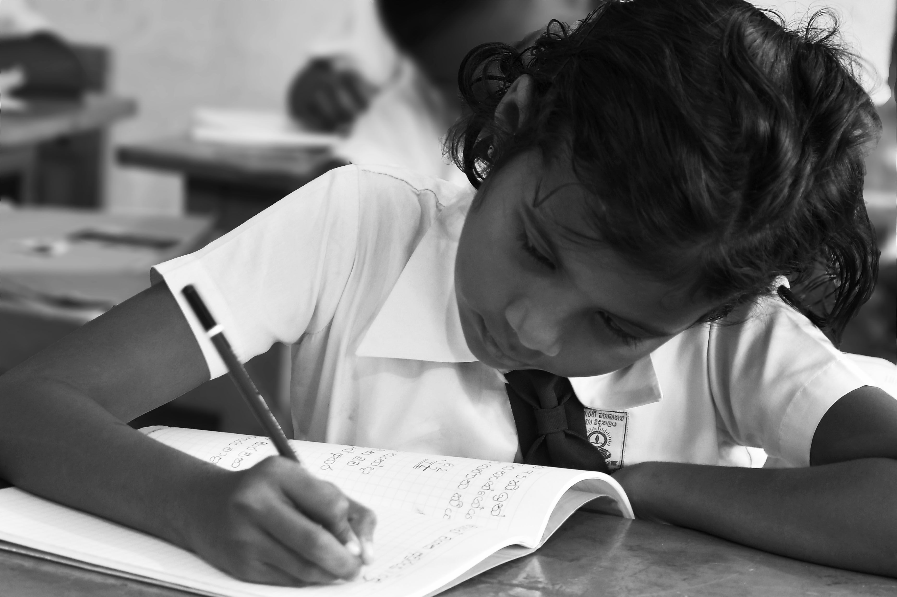

BrightPath
Learn · Grow · Succeed
Take Action →
BrightPath
Learn · Grow · Succeed
Take Action →
Bridging the Digital Divide
Having a school place doesn't mean much if the homework, the past papers, and half the coursework now assume you have a laptop and stable internet at home. This page looks at that gap and what can actually be done about it.
The Problem

A lot of coursework today assumes access to a computer and the internet outside of school hours. Online past papers, shared documents, video lectures — all of it depends on a device and a connection that not every student has waiting for them at home.
Some students end up doing all of their "digital" work squeezed into short windows at school, a library, or on a borrowed phone. That's not the same as having your own device whenever you need it.
Why It Matters

SDG 4 is about quality education for everyone, not just the students who happen to already have the right equipment at home. If two students are given the same assignment but only one of them can actually access the online resources it needs, they aren't really being assessed on the same thing.
What's Being Done

Some schools keep computer labs open outside class hours. Some students share devices with siblings or neighbours on a rota. None of this fully solves the problem, but it shows that small, local fixes can help even without a big budget.
What You Can Do
- Pass on an old phone, tablet, or laptop instead of letting it sit unused.
- Offer to print or download resources for a classmate with limited data.
- Share offline copies of notes instead of only posting them online.